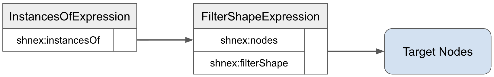
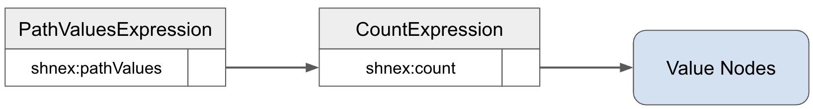

This document describes Shapes Constraint Language (SHACL) Node Expressions.
This specification is published by the Data Shapes Working Group .
Node expressions
Some examples in this document use Turtle [[rdf12-turtle]]. The reader is expected to be familiar with SHACL [[shacl12-core]] and SPARQL [[sparql12-query]].
Within this document, the following namespace prefix bindings are used:
| Prefix | Namespace |
|---|---|
rdf: |
http://www.w3.org/1999/02/22-rdf-syntax-ns# |
rdfs: |
http://www.w3.org/2000/01/rdf-schema# |
sh: |
http://www.w3.org/ns/shacl# |
shnex: |
http://www.w3.org/ns/shacl-node-expr# |
skos: |
http://www.w3.org/2004/02/skos/core# |
sparql: |
http://www.w3.org/ns/sparql# |
xsd: |
http://www.w3.org/2001/XMLSchema# |
ex: |
http://example.com/ns# |
Grey boxes such as this include syntax rules that apply to the shapes graph.
true
denotes the RDF term
"true"^^xsd:boolean
.
false
denotes the RDF term
"false"^^xsd:boolean
.
This document defines the SHACL Node Expressions language that extends [[[shacl12-core]]] [[shacl12-core]]. This specification describes conformance criteria for:
Also see the discussion of well-formedness in the Conformance section of SHACL Core.
A SHACL shapes graph can declare node expressions as values of various properties where dynamic computation is useful,
such as sh:targetNode, sh:values, and sh:deactivated.
A node expression is represented by an RDF node and can be evaluated to produce a list of output nodes.
For example, when used at sh:targetNode, a node expression produces the list
of target nodes of a shape.
When used at sh:values, a node expression produces the derived values for the property specified by sh:path.
The following example contains a node expression that states that the target nodes of
the shape ex:EstonianCompanyShape are the instances of ex:Company where
the ex:headQuarterCountry is ex:Estonia.
The following diagram illustrates how this node expression is interpreted, from a logical point of view.
During validation, a SHACL processor will determine the target nodes of the shape
by evaluating the filter shape expression.
However, the filter shape expression first evaluates its input expression, which is specified via sh:nodes
and is an instancesOf expression.
This will produce all instances of the given class, ex:Company.
The shnex:filterShape is then applied to all of these instances, to keep only the companies
that conform to the provided shape, by having their headquarters in Estonia.

The scenario above can also be expressed using SPARQL select expressions.
For performance reasons, for example, specific implementations of SHACL node expressions might
internally convert node expressions such as the shnex:filterShape above to SPARQL.
The next example uses a node expression to compute the values of the property ex:employeeCount
as the number of values of the property ex:employee at each instance of ex:Company.

One difference between this example and the previous examples about sh:targetNode
is that these node expressions are evaluated against a given focus node.
This means that when a data visualization needs to render an instance of ex:Company,
the currently displayed company is the focus node, for which the number of employees
will be fetched.
Note that these derived properties do not automatically lead to the creation of triples.
Tools that use these sh:values expressions typically compute the values on demand
only, for example whenever an instance of ex:Company is displayed or queried.
Some tools MAY however materialize the triples, for example so that they become available to
SPARQL queries.
This section introduces the general syntax of SHACL node expressions.
The term node expression function refers to the kind or type
of a node expression.
For example, sh:FilterShapeExpression is a node expression function,
while a specific instance of this function in the graph is the node expression itself.
The most basic node expression functions are constant node expressions, which are either literals or IRIs, and simply evaluate to these constants. All other node expressions are represented by blank nodes, and come in the following two variations:
The node expression functions in this section are called constant node expressions. They were introduced in the SHACL Core specification and are repeated here to keep this document self-contained.
A node expression that is an IRI is called an IRI expression with the function name
sh:IRIExpression.
A node in an RDF graph is a well-formed IRI expression if it is an IRI.
The output nodes of an IRI expression are the list consisting of exactly the node expression itself:
evalExpr(expr, focusGraph, focusNode, scope) -> [expr]
A node expression that is a literal is called a literal expression with the function name
sh:LiteralExpression.
A node in an RDF graph is a well-formed literal expression if it is a literal.
The output nodes of a literal expression are the list consisting of exactly the node expression itself:
evalExpr(expr, focusGraph, focusNode, scope) -> [expr]
A named parameter function is a node expression function that is represented by a blank node that is the subject of at least one triple where the predicate can be used to uniquely identify the function, which is known as the key parameter.
The evaluation of a named parameter function can produce any of the following:
For example, the named parameter function
shnex:FilterShapeExpression
has shnex:filterShape as its key parameter.
In this document, key parameters are marked in bold face.
Expressions based on named parameter functions often take other node expressions as arguments, evaluate those input node expressions, and then produce a different list of nodes as output nodes.
The remainder of this section is informative.
This document includes many examples of named parameter functions, such as the Estonian Company Shape example.
A list parameter function is a node expression function
that is represented by a blank node that is the subject of a single
triple where the object o is conforming to one of the following syntax rules, in order:
o is the empty SHACL list rdf:nil (written as () in Turtle)
then the arguments are the empty list.[ sparql:now () ]
o is a blank node that is a well-formed SHACL list where all
members are well-formed node expressions,
then the arguments are the members of that list.[ sparql:plus ( 38 4 ) ] and [ sparql:abs ( -42 ) ]
[ sparql:abs -42 ], which is equivalent to
[ sparql:abs ( -42 ) ].
The predicate of this triple is called the list parameter property.
The evaluation of a list parameter function can produce any of the following:
Furthermore, each argument of a list parameter function must evaluate to an individual, single node, not to a list of nodes. If an argument is a node expression, then this node expression must evaluate to a maximum of one output node. An evaluation failure must be produced if there is more than one output node. This is different from named parameter functions, where arguments may produce lists of multiple nodes.
The remainder of this section is informative.
Note that some named parameter functions — such as shnex:IntersectionExpression —
also use a SHACL list as an object of the key parameter, similar to list parameter functions which always have a SHACL list as the object of their list parameter property.
However, these may produce more than one output node, and also accept lists as input nodes.
The following example uses two list parameter functions —
the (hypothetical) ex:coalesce and the SPARQL-based sparql:concat —
to compute the ex:displayName
of a person either as the value of ex:fullName or (if that doesn't exist)
as a concatenation of ex:firstName, a space, and ex:lastName.
Node expressions may produce a failure instead of a list of output nodes.
Some node expressions evaluate other, nested node expressions.
For example, If Expressions evaluate nested expressions for
shnex:if, shnex:then and shnex:else.
In general, if any such nested expressions produce a failure then the surrounding
expression also produces the same failure.
The remainder of this section is informative.
Note that this policy impacts the evaluation order of node expressions.
For example, shnex:if expressions are evaluated first and shnex:then
will be evaluated only if the shnex:if has returned ( true ).
Even if the shnex:else branch would produce a failure, the output would
still only be the output nodes of the shnex:then branch.
This section defines all node expression functions that are built into SHACL engines that implement this specification.
The syntax definitions of node expression functions that are based on blank nodes typically use a table of properties that these blank nodes can or must have. Such blank nodes are only well-formed when they are not the subject of any other triples, and when none of these properties is used more than once. The tables may also list SHACL constraints with which the property values are required to conform. In the tables, mandatory properties are rendered in bold face.
A blank node that is not the subject of any triple is called an empty expression
with the function name shnex:EmptyExpression.
An empty expression has the empty list [] as its output nodes.
The remainder of this section is informative.
This node expression function is written in Turtle as [] and must not be confused with
the empty SHACL list () which is the IRI rdf:nil.
A blank node that is the subject of the following properties
is called a var expression with the function name shnex:VarExpression:
Property
Constraints
Description
shnex:var
sh:datatype xsd:string
sh:minLength 1
The variable name, e.g.
"focusNode".
Let var be the value of shnex:var in the var expression.
The output nodes of the var expression are computed as follows, in order:
var is "focusNode" then evalExpr(expr, focusGraph, focusNode, scope) -> [focusNode]var is in the scope then evalExpr(expr, focusGraph, focusNode, scope) -> [ scope[var] ]evalExpr(expr, focusGraph, focusNode, scope) -> []The remainder of this section is informative.
The following example illustrates the use of a var expression pointing at the current focus node
to state that the default value of the ex:loves relationship is the current instance of ex:Person,
creating a self-reference.
A blank node that is the subject of the following properties
is called a list expression with the function name shnex:ListExpression:
Property
Constraints
Description
rdf:first
MUST be a literal or an IRI.
The first member of the list.
rdf:rest
Must be a well-formed SHACL list, where each member
is either a literal or an IRI.
The rest of the list, e.g.,
rdf:nil.
The output nodes of a list expression are the members of the list expression, in the same order as in the list.
The remainder of this section is informative.
Note that rdf:nil itself is not a list expression because it will be interpreted
as a IRI expression.
As a result, all well-formed list expressions have at least one member.
The following example declares a property for instances of rdfs:Class
where the values are derived from the values of the path rdfs:subClassOf*
but with the constants from the list ( owl:Thing rdfs:Resource ) removed using
shnex:remove.
A blank node that is the subject of the following properties
is called a path values expression with the function name shnex:PathValuesExpression:
Property
Constraints
Description
shnex:pathValues
Must be a well-formed SHACL property path.
The path to get the values from.
shnex:focusNode
Optional, must be a well-formed node expression.
A node expression producing the focus node,
defaulting to the current focus node from the evaluation context.
Let $pathValues be the value of shnex:pathValues,
and $focusNode be the value of shnex:focusNode in a path values expression.
If shnex:focusNode is not given, $focusNode is the list consisting of exactly the focus node
from the evaluation context.
Let N be the nodes produced by evalExpr($focusNode, focusGraph, focusNode, scope).
If N has 0 members, then the output nodes are the empty list.
If N has more than 1 member, an evaluation failure is reported.
Otherwise, the output nodes of the path values expression are the list of value nodes of the path
for the (only) member of N.
Important: Note the distinction between sh:path and shnex:pathValues:
sh:path is used in property shapes to specify the property path that will be constrained during validation. It defines the property or path to which the shape's constraints apply.shnex:pathValues is used in node expressions to specify the property path that will be traversed to generate a sequence of values. It produces the actual values found by following the path.For example, sh:path ex:name in a property shape constrains the values of the ex:name property, while shnex:pathValues ex:name in a node expression generates a sequence containing all values of the ex:name property.
The remainder of this section is informative.
Note that by definition, the value nodes of a property shape may be derived properties,
based on sh:values or sh:defaultValue expressions.
This means that if the provided shnex:pathValues path is an IRI, then a path values expression
may cause the evaluation of other node expressions, as a simple kind of rule chaining.
The following example illustrates the use of a path values expression to compute the value
of the property ex:topConceptCount.
The expression returns the values of skos:hasTopConcept for the current skos:ConceptScheme
and these values are processed by the shnex:count to return the
number of top concepts.
The next example illustrates the use of a path values expression together with a specific focus node
(instead of the default focus node provided by the evaluation context).
The shape targets all subjects that have skos:Concept as their rdf:type
with a dynamically computed sh:targetNode expression.
In other words, the target nodes are the direct instances of skos:Concept based on asserted
rdf:type triples, not including the subclasses of skos:Concept.
A blank node that is the subject of the following properties
is called an exists expression with the function name shnex:ExistsExpression:
Property
Constraints
Description
shnex:exists
A well-formed node expression.
A node expression. If this evaluates to a list with at least one member
then the output nodes are
( true ); otherwise, the output nodes are ( false ).
Let exists be the value of shnex:exists in the exists expression.
Let N be the list of nodes produced by evalExpr(exists, focusGraph, focusNode, scope).
The output nodes of the exists expression are ( true ) if and only if
N has at least one member; otherwise, the output nodes are ( false ).
The remainder of this section is informative.
The Example for shnex:if uses shnex:exists.
A blank node that is the subject of the following properties
is called an if expression with the function name shnex:IfExpression:
Property
Constraints
Description
shnex:if
A well-formed node expression.
A node expression. The
shnex:then branch is returned when the shnex:if expression
returns true as its only output node, in all other cases shnex:else.
shnex:then
A well-formed node expression.
Optional but at least one of
shnex:then or shnex:else is required.
The node expression that is returned when the
shnex:if evaluated to [true].
shnex:else
A well-formed node expression.
Optional but at least one of
shnex:then or shnex:else is required.
The node expression that is returned when the
shnex:if did not evaluate to [true].
Let if be the value of shnex:if,
then be the value of shnex:then, and
else be the value of shnex:else for the if expression.
Let IFs be the nodes produced by evalExpr(if, focusGraph, focusNode, scope).
If IFs is the list ( true ), then the output nodes of the if expression
are the nodes produced by evalExpr(then, focusGraph, focusNode, scope), or the empty list if then has no value.
Otherwise, the output nodes are the nodes produced by evalExpr(else, focusGraph, focusNode, scope), or the empty list if else has no value.
Implementations MUST apply lazy evaluation techniques, so the shnex:then or
shnex:else branches are only evaluated when necessary.
The remainder of this section is informative.
The following example illustrates the use of shnex:if to compute the
values of a derived property ex:fillColor that may be queried to
compute the colors of cities on a map.
In the example, instances of ex:City that have a value for ex:capitalOf
will be displayed in "blue", while the others will be "red".
A blank node that is the subject of the following properties
is called a distinct expression with the function name shnex:DistinctExpression:
Property
Constraints
Description
shnex:distinct
A well-formed node expression.
The node expression that shall be reduced to its distinct members.
Let distinct be the value of shnex:distinct in the distinct expression.
Let input be the output nodes of evalExpr(distinct, focusGraph, focusNode, scope).
The output nodes of the distinct expression are the list of nodes in input
in the same order but with duplicates eliminated (the first occurences of each node shall be kept, the others removed).
Nodes are compared using term equality, i.e. "01"^^xsd:integer is distinct from "1"^^xsd:integer.
The remainder of this section is informative.
The following example declares a derived property ex:superClassesIncludingRoot
that is computed as the concat of the (transitive) values of rdfs:subClassOf
and the list expression ( rdfs:Resource ).
Since the asserted values of rdfs:subClassOf may already include rdfs:Resource
(for example, due to an active inference engine on the data graph), shnex:distinct will make
sure that the output nodes do not include rdfs:Resource twice.
A blank node that is the subject of the following properties
is called an intersection expression with the function name shnex:IntersectionExpression:
Property
Constraints
Description
shnex:intersection
A well-formed SHACL list where each member is a well-formed node expression.
The node expressions that shall be intersected.
Let members be the members of the value of shnex:intersection in the intersection expression.
The output nodes of the intersection expression are the nodes that form the intersection of the output nodes
produced by each node expression NE in members, using evalExpr(NE, focusGraph, focusNode, scope).
Nodes must be equal using term equality, e.g., "01"^^xsd:integer is distinct from "1"^^xsd:integer.
The intersection does not include duplicates and the order is undefined.
The remainder of this section is informative.
The following example uses shnex:intersection as a sh:targetNode node expression.
This shape will target all nodes that are SHACL instances of ex:Australian and
ex:German at the same time.
A blank node that is the subject of the following properties
is called a concat expression, with the function name shnex:ConcatExpression:
Property
Constraints
Description
shnex:concat
A well-formed SHACL list where each member is a well-formed node expression.
The node expressions that shall be concatenated.
Let members be the members of the value of shnex:concat in the concat expression.
The output nodes of the concat expression are the concatenation of all output nodes
for each node expression NE in members, using evalExpr(NE, focusGraph, focusNode, scope).
The order is preserved, evaluating the members from left to right and keeping the order of each list of output nodes.
The remainder of this section is informative.
Note that a concat expression may produce duplicate output nodes if the individual output nodes overlap. Use shnex:distinct to eliminate duplicates.
The following example declares a derived property ex:allRelatives
that concatenates the values of ex:parent and ex:sibling.
The shnex:concat expression takes a list of node expressions and returns
all nodes from each expression in sequence from left to right.
A blank node that is the subject of the following properties
is called a remove expression, with the function name shnex:RemoveExpression:
Property
Constraints
Description
shnex:remove
A well-formed node expression.
The nodes that shall be removed from the
shnex:nodes.
shnex:nodes
A well-formed node expression.
The input nodes.
Let remove be the value of shnex:remove
and nodes be the value of shnex:nodes in the remove expression.
Let M be the output nodes of evalExpr(remove, focusGraph, focusNode, scope).
Let N be the output nodes of evalExpr(nodes, focusGraph, focusNode, scope).
The output nodes of the remove expression are the nodes in N
except those that are also in M, preserving the order of N.
Nodes must be equal using term equality, i.e., "01"^^xsd:integer is distinct from "1"^^xsd:integer.
The remainder of this section is informative.
The following example declares a derived property, ex:availableAuthors,
that returns all persons who are authors, except those who are currently on leave.
The shnex:remove expression takes the nodes from shnex:nodes (all authors)
and removes the nodes returned by the shnex:remove expression (authors on leave).
A blank node that is the subject of the following properties
is called a filter shape expression with the function name shnex:FilterShapeExpression:
Property
Constraints
Description
shnex:filterShape
A well-formed shape.
The shape that all input nodes need to conform to.
shnex:nodes
A well-formed node expression.
A node expression producing the nodes that are validated.
Let filterShape be the value of shnex:filterShape,
and nodes be the value of shnex:nodes in a filter shape expression.
The output nodes of the filter shape expression are the output nodes of
evalExpr(nodes, focusGraph, focusNode, scope) except those that do not conform to
the shape filterShape, preserving the order in the list.
The remainder of this section is informative.
The following example illustrates the use of shnex:filterShape to return a subset
of values of the ex:child property where the ex:gender property
has the value "male".
A blank node that is the subject of the following properties
is called a limit expression with the function name shnex:LimitExpression:
Property
Constraints
Description
shnex:limit
sh:datatype xsd:integer
sh:minInclusive 0
The maximum number of nodes that shall be returned.
shnex:nodes
A well-formed node expression.
The input nodes.
Let limit be the value of shnex:limit
and nodes be the value of shnex:nodes in the limit expression.
Let N be the output nodes of evalExpr(nodes, focusGraph, focusNode, scope).
The output nodes of the limit expression are the first limit nodes in N
from left to right, in the same order.
The remainder of this section is informative.
The following example illustrates the use of shnex:limit to compute the
values of a derived property ex:oldestChildren to be a sub-list of
values of ex:child at the current focus node (which is an instance of
the class ex:Person).
The values are computed by first fetching the values of ex:child, then
ordering them by their ex:dateOfBirth, and finally getting only
2 of these children at most.
A blank node that is the subject of the following properties
is called an offset expression with the function name shnex:OffsetExpression:
Property
Constraints
Description
shnex:offset
sh:datatype xsd:integer
sh:minInclusive 0
The number of nodes that shall be skipped from the
shnex:nodes.
shnex:nodes
A well-formed node expression.
The input nodes.
Let offset be the value of shnex:offset
and nodes be the value of shnex:nodes in the offset expression.
Let N be the output nodes of evalExpr(nodes, focusGraph, focusNode, scope).
The output nodes of the offset expression are the nodes in N
except for the first offset nodes from left to right, in the same order.
The remainder of this section is informative.
The following example illustrates the use of shnex:offset to compute the
values of a derived property ex:remainingChildren to be a sub-list of
values of ex:child at the current focus node (which is an instance of
the class ex:Person).
The values are computed by first fetching the values of ex:child, then
ordering them by their ex:dateOfBirth, and finally skipping the first
of these children.
A blank node that is the subject of the following properties
is called an order by expression with the function name shnex:OrderByExpression:
Property
Constraints
Description
shnex:nodes
A well-formed node expression.
The input nodes.
shnex:orderBy
A well-formed node expression.
The node expression that is applied to each input node.
shnex:desc
sh:datatype xsd:boolean
true to produce descending order, defaults to false.
Let orderBy be the value of shnex:orderBy,
nodes be the value of shnex:nodes and
desc be the value of shnex:desc in the order by expression.
Let N be the output nodes of evalExpr(nodes, focusGraph, focusNode, scope).
Let c(n) be the first output node of evalExpr(orderBy, focusGraph, n, scope)
for each n in N.
The output nodes of the order by expression are the nodes in N
sorted by c(n) using the same logic as SPARQL ORDER BY.
Nodes where c(n) is unbound are considered smaller than those that have any value.
If desc is true then the output nodes are returned in the reverse order.
The remainder of this section is informative.
The Example of shnex:limit also illustrates shnex:orderBy.
A blank node that is the subject of the following properties
is called a flat map expression,
with the function name shnex:FlatMapExpression:
Property
Constraints
Description
shnex:flatMap
A well-formed node expression.
The node expression that is applied to each input node.
shnex:nodes
A well-formed node expression.
The input nodes. If omitted, defaults to the focus node.
Let flatMap be the value of shnex:flatMap
and nodes be the value of shnex:nodes in a flat map expression.
If shnex:nodes is not specified, let nodes be the focus node.
Let N be the output nodes of
evalExpr(nodes, focusGraph, focusNode, scope).
For each node n in N, let Mn be the output nodes of
evalExpr(flatMap, focusGraph, n, scope).
The output nodes of the flat map expression are produced by concatenating all sequences
Mn in the order of the corresponding nodes n in N.
The remainder of this section is informative.
The shnex:flatMap operation applies an expression to each input node and flattens the results
into a single sequence. This is particularly useful when combining results from multiple path traversals
or when working with nested structures.
A key aspect of shnex:flatMap is that the focus node changes for each iteration.
For each node produced by the shnex:nodes expression, that node becomes the focus node
when evaluating the shnex:flatMap expression. This allows relative path expressions to work correctly
at each level of nesting. The output sequences are then concatenated in order, preserving both the order
of input nodes and the order of results within each output sequence.
Unlike operations that remove duplicates, shnex:flatMap preserves all results, including duplicates.
If duplicate elimination is desired, use shnex:distinct to post-process the results.
The following example illustrates the use of shnex:flatMap to derive a property
ex:allSkills that collects all skills from all employees of a company.
For each employee of the company, the flatMap operation applies a path expression to retrieve their skills,
and flattens the resulting skill sequences into a single comprehensive list.
A blank node that is the subject of the following properties
is called a find first expression,
with the function name shnex:FindFirstExpression:
Property
Constraints
Description
shnex:findFirst
A well-formed shape.
The shape that the matching node must conform to.
shnex:nodes
A well-formed node expression.
The input nodes. If omitted, defaults to the focus node.
Let shape be the value of shnex:findFirst
and nodes be the value of shnex:nodes in a find first expression.
If shnex:nodes is not specified, let nodes be the focus node.
Let N be the output nodes of evalExpr(nodes, focusGraph, focusNode, scope).
The output nodes of the find first expression contain exactly the first node n
in N that conforms to the shape shape,
or an empty sequence if no such node exists.
The remainder of this section is informative.
The shnex:findFirst operation finds the first node in a sequence that conforms to a given shape.
The following example illustrates the use of shnex:findFirst to derive a property
ex:seniorEmployee that finds the first employee with more than five years of experience.
The shnex:findFirst operation tests each employee against a shape that validates their years of service.
A blank node that is the subject of the following properties
is called a match all expression,
with the function name shnex:MatchAllExpression:
Property
Constraints
Description
shnex:matchAll
A well-formed shape.
The shape that all input nodes must conform to.
shnex:nodes
A well-formed node expression.
The input nodes. If omitted, defaults to the focus node.
Let shape be the value of shnex:matchAll
and nodes be the value of shnex:nodes in the match all expression.
If shnex:nodes is not specified, let nodes be the focus node.
Let N be the output nodes of evalExpr(nodes, focusGraph, focusNode, scope).
The output nodes of the match all expression are ( true ) if
every node n in N conforms to the shape shape;
otherwise the output nodes are ( false ).
The remainder of this section is informative.
The shnex:matchAll operation returns true if all nodes in a sequence conform to a given shape,
false otherwise.
The following example illustrates the use of shnex:matchAll to derive a property
ex:allEmployeesActive that checks whether all employees of a company are currently active.
The match all operation tests each employee against a shape that validates their active status.
A blank node that is the subject of the following properties
is called a count expression with the function name shnex:CountExpression:
Property
Constraints
Description
shnex:count
A well-formed node expression.
The input nodes that shall be counted.
Let count be the value of shnex:count in the count expression.
Let N be the output nodes of evalExpr(count, focusGraph, focusNode, scope).
The output nodes of the count expression is the list consisting of exactly one
xsd:integer literal that is computed as the length of N.
The remainder of this section is informative.
The following example illustrates the use of shnex:count to derive a property
ex:topConceptCount as the number of values of the skos:hasTopConcept
property in a skos:ConceptScheme.
A blank node that is the subject of the following properties
is called a min expression with the function name shnex:MinExpression:
Property
Constraints
Description
shnex:min
A well-formed node expression.
The input nodes from which the minimum value shall be returned.
Let min be the value of shnex:min in the min expression.
Let N be the output nodes of evalExpr(min, focusGraph, focusNode, scope).
The output nodes of the min expression is the list consisting of at most one node
that is computed as the minimum value from N,
see SPARQL MIN.
The remainder of this section is informative.
The following example illustrates the use of shnex:min to derive a property
ex:minStartDate as the smallest value of the values that can be reached using the
property path ex:exployee/ex:startDate.
In other words, it walks through all employees of the given company and returns the earliest
date on which an employee started.
A blank node that is the subject of the following properties
is called a max expression with the function name shnex:MaxExpression:
Property
Constraints
Description
shnex:max
A well-formed node expression.
The input nodes from which the maximum value shall be returned.
Let max be the value of shnex:max in the max expression.
Let N be the output nodes of evalExpr(max, focusGraph, focusNode, scope).
The output nodes of the max expression is the list consisting of at most one node
that is computed as the maximum value from N,
see SPARQL MAX.
The remainder of this section is informative.
The Example for shnex:min can be easily adapted
for shnex:max.
A blank node that is the subject of the following properties
is called a sum expression with the function name shnex:SumExpression:
Property
Constraints
Description
shnex:sum
A well-formed node expression.
The input nodes from which the sum shall be returned.
Let sum be the value of shnex:sum in the sum expression.
Let N be the output nodes of evalExpr(sum, focusGraph, focusNode, scope).
The output nodes of the sum expression is the list consisting of exactly one node
that is computed as the sum of all nodes from N,
see SPARQL SUM.
The remainder of this section is informative.
Note that shnex:sum needs to be used with care and may be misunderstood,
when used with property paths.
The problem is that when a path values expression is used as input to a sum expression,
the path values expression will have eliminated duplicates before they can be processed by the shnex:sum.
As a result, only the distinct values will be added up.
To work around this, one option is to use SPARQL-based node expressions.
Another alternative is illustrated in the following example.
This section enumerates node expression functions that did not fit into other categories.
A blank node that is the subject of the following properties
is called an instancesOf expression with the function name shnex:InstancesOfExpression:
Property
Constraints
Description
shnex:instancesOf
sh:nodeKind sh:IRI
The class that the output nodes must be instances of.
Let type be the value of shnex:instancesOf in an instancesOf expression.
The output nodes of the instancesOf expression are the nodes that are SHACL instances
of type in the focus graph.
The remainder of this section is informative.
Note that the definition of SHACL instance includes instances of subclasses of the given class.
So if the focus graph contains ex:SubClass rdfs:subClassOf ex:SuperClass and ex:SubInstance a ex:SubClass
then ex:SubInstance will also be returned as instance of ex:SuperClass.
The interpretation of shnex:instancesOf is similar to sh:targetClass and sh:class.
Users of this node expression function should be aware that the list of output nodes may be very large.
The Example for shnex:intersection uses shnex:instanceOf.
A blank node that is the subject of the following properties
is called a nodes matching expression with the function name shnex:NodesMatchingExpression:
Property
Constraints
Description
shnex:nodesMatching
sh:nodeKind sh:BlankNodeOrIRI
Must be a well-formed shape.
The shape that the output nodes must conform to.
Let shape be the value of shnex:nodesMatching in a nodes matching expression.
The output nodes of the nodes matching expression are the nodes in the focus graph
that conform to shape.
The remainder of this section is informative.
Users of this node expression function should be aware that the list of output nodes may be very large and that some implementations may not be able to efficiently process it.
The following example illustrates the use of shnex:nodesMatching to compute all instances of
ex:Company that have at least 100 employees.
The interpretation of shnex:nodesMatching is similar to sh:targetWhere.
The main differences are that sh:targetWhere is part of SHACL Core and that
shnex:nodesMatching can be used in arbitrary node expressions.
This section introduces SHACL SPARQL function expressions based on [[sparql12-query]] that can be used in node expressions.
A blank node that uses a SPARQL function URI sparql:<NAME>
as its predicate with an rdf:List of arguments as its object
is called a SHACL SPARQL function expression with the corresponding SPARQL function name.
The evaluation follows the SPARQL semantics for the corresponding SPARQL function.
Each item in the rdf:List is evaluated as a node expression to produce argument values,
which are then passed to the SPARQL function implementation.
If the SPARQL function produces a single result value, it is wrapped as a singleton list containing that output node.
If the SPARQL function produces no result or an error, the expression produces an empty list or an evaluation failure, respectively.
SHACL includes vocabulary terms that can be used to define new node expression functions by wrapping other (parameterized) node expressions. This makes it possible to extend the library of available SHACL node expressions without having to hard-code changes to an engine.
A custom named parameter function is an IRI in a shapes graph
that is a SHACL instance of sh:NamedParameterExpressionFunction and
a SHACL subclass of sh:NamedParameterExpression.
It has a single value for sh:bodyExpression that is a well-formed
node expression.
A custom named parameter function declares one or more parameters as values
of sh:parameter, where each such parameter has exactly one value for
sh:path and that value is an IRI.
At least one of the parameters has sh:keyParameter true, declaring the key parameters
for the function.
The key parameters of all node expression functions
(including the built-in ones from the shnex: namespace) must be disjoint.
Custom named parameter functions can reference the declared parameters using an
arg expression such as [ shnex:arg ex:param ], where the value of shnex:arg
matches the IRI of the parameter's sh:path.
A custom named parameter expression is a node expression represented by a blank node that has exactly one value for at least one of the key parameters.
Let expr be a custom named parameter expression with the
custom named parameter function f.
Let body be the value of sh:bodyExpression at f
in the shapes graph.
Let argScope be a map of (parameter) nodes as keys and (argument) nodes
as values, so that each parameter of f has the value of the parameter's
sh:path from expr.
For example, if f declares just one parameter with sh:path ex:param
and expr is [ ex:param 42 ] then argScope is { ex:param : 42 }.
The output nodes of expr are computed using
evalExpr(expr, focusGraph, focusNode, scope) -> evalExpr(body, focusGraph, focusNode, argScope)
The remainder of this section is informative.
The following example defines a new node expression function ex:AverageExpression
that takes another node expression as input using the key parameter ex:average
and then calculates the sum of all input nodes and divides it by the number of nodes,
returning the average value of these nodes.
This new node expression function can the be used as follows:
A custom list parameter function is an IRI in a shapes graph
that is a SHACL instance of sh:ListParameterExpressionFunction and
a SHACL subclass of sh:ListParameterExpression.
The IRI of a custom list parameter function is its list parameter property.
It has a single value for sh:bodyExpression that is a well-formed
node expression.
Custom list parameter functions can reference the arguments using an
arg expression such as [ shnex:arg 0 ] and [ shnex:arg 1 ]
where the xsd:integer n corresponds to the nth member
of the arguments list, starting with 0 as the first member.
A custom list parameter expression is a node expression represented by a blank node that is the subject of exactly one triple and the predicate of that triple is the list parameter property of a custom list parameter function in the shapes graph.
Let expr be a custom list parameter expression with the
custom list parameter function f.
Let body be the value of sh:bodyExpression at f
in the shapes graph.
Let argScope be a map of (parameter index) nodes as keys and (argument) nodes
as values, so that each list argument of expr has the index of the argument as an
xsd:integer as key, starting with 0 for the first argument.
For example, if expr has arguments ( 38 4 ) then the
argScope is { 0 : 38, 1 : 4 }.
The output nodes of expr are computed using
evalExpr(expr, focusGraph, focusNode, scope) -> evalExpr(body, focusGraph, focusNode, argScope)
where an evaluation failure is reported when there is more than 1 output node.
The remainder of this section is informative.
The following example defines a new node expression function ex:spacedConcat
that takes two nodes as input and returns a string concatenating the two nodes with a space in between.
This new node expression function can the be used as follows:
Custom node expressions can use shnex:arg to access the arguments.
A blank node that is the subject of the following properties
is called an arg expression with the function name shnex:ArgExpression:
Property
Constraints
Description
shnex:arg
sh:or (
[ sh:nodeKind sh:IRI ]
[ sh:datatype xsd:integer ]
)
The argument key, e.g.
ex:myParameter or 1.
Let arg be the value of shnex:arg in the arg expression.
The output nodes of the var expression are computed as follows, in order:
arg is in the scope and has the value a then
evalExpr(expr, focusGraph, focusNode, scope) -> evalExpr(a, focusGraph, focusNode, {})
evalExpr(expr, focusGraph, focusNode, scope) -> []The remainder of this section is informative.
Both shnex:arg and shnex:var access values from the scope.
The difference is that shnex:arg interprets the values as node expressions, while
shnex:var treats the values as individual nodes.
As a result, a custom node expression can evaluate nested node expressions that are passed in as arguments.
This section introduces SHACL constraint components that operate on node expressions.
Based on node expressions, this section introduces a constraint component called
expression constraints.
Expression constraints can be used in any shape to declare the condition that the
node expression specified via sh:expression has true as its only output node.
The evaluation of these node expressions is repeated for all value nodes of the shape
as the focus node.
Constraint Component IRI: sh:ExpressionConstraintComponent
| Property | Summary and Syntax Rules |
|---|---|
sh:expression |
The node expression that must return true.
The values of sh:expression at a
shape must be well-formed node expressions.
|
$expr be a value of sh:expression.
For each value node v
where evalExpr(expr, data graph, focusNode, {value: v})
does not return the list consisting of exactly true as its output nodes,
there is a validation result that has v as its sh:value
and a deep copy of $expr in the results graph as its sh:sourceConstraint.
The remainder of this section is informative.
Note that the scope in the evaluation of expression constraints maps
value to the current value node.
The following example uses some SPARQL-based node expressions to declare
the constraint that the values of ex:ibanNumber must start with the same two (upper-case) letters as
the values of the path ex:country/ex:code.
sh:nodeByExpression specifies the condition that each value node conforms to the
node shapes produced by a node expression.
The evaluation of these node expressions is repeated for all value nodes of the shape
as the focus node.
Constraint Component IRI: sh:NodeByExpressionConstraintComponent
| Property | Summary and Syntax Rules |
|---|---|
sh:nodeByExpression |
The node shapes that all value nodes need to conform to.
The values of sh:nodeByExpression in a shape must be well-formed node expressions.
|
$expr be a value of sh:nodeByExpression.
For each value node v: perform a conformance check of
v against each output node of evalExpr(expr,
data graph, v, {}) s. A failure
MUST be produced if the conformance check of v against
s produces a failure. Otherwise, if v does
not conform to s, there is a validation result
with v as sh:value and a deep copy of
s as sh:sourceConstraint.
The remainder of this section is informative.
sh:nodeByExpression functions similarly to sh:node, but instead of referencing a fixed node shape,
a referenced node expression is used to dynamically compute the set of node shapes to which each value node must conform.
sh:nodeByExpression and sh:node:
sh:nodeByExpression references a node expression instead of a fixed node shape as sh:node does.
sh:nodeByExpression cannot reference a node shape that is a blank node as a value like sh:node can,
as a blank node would be interpreted as a node expression.
sh:nodeByExpression additionally include a value for `sh:sourceConstraint`.
Note that sh:node and sh:nodeByExpression exhibit the same behavior when given a value that is an IRI of a node shape.
In this case, sh:node directly validates against the specified node shape, whereas sh:nodeByExpression interprets the IRI
as an IRI expression that evaluates to a set containing the same node shape.
The following example demonstrates how sh:nodeByExpression could be used in the context of the W3C Data Cube Vocabulary.
Building upon examples 5 and 6 from the Data Cube Vocabulary documentation, Data Structure Definition is extended with the property eg:hasShape,
which links to an associated node shape to which relevant qb:Observation instances must conform.
To validate that every qb:Observation instance conforms to the appropriate shape, sh:nodeByExpression with a path values expression
is used to locate the shape at the property path qb:dataSet/qb:structure/eg:hasShape from each qb:Observation instance.
This section defines Dynamic SHACL as a dialect of SHACL that some implementations MAY support.
In Dynamic SHACL any parameter of a constraint can be computed using a node expression,
excluding those that do not allow blank nodes (such as sh:node)
but including those that take SHACL lists as values (such as sh:class,
sh:datatype, and sh:in).
During validation, such node expressions are evaluated in the data graph,
using the current focus node.
The resulting nodes will be used as parameters for the constraint.
As a use case of Dynamic SHACL, assume we want to express that the legal minimum age of a president is 18 unless the country is USA, where it is 35.
As a use case of Dynamic SHACL, assume the following data graph.
We want to express that the valid values of ex:state depend on the value of ex:country
at the given focus node.
For example, the valid values for country ex:USA would be ( "AL" "AK" "AZ" ... )
while valid values for country ex:Australia would be ( "ACT" "NSW" "NT" "QLD" "SA" "TAS" "VIC" "WA" ).
This fact can be represented as part of the data:
Using this extra information, we can now define a sh:in constraint using a path values expression:
During validation, a Dynamic SHACL engine will evaluate the path values expression at sh:in
and use the resulting nodes as members of the allowed values.
Thus, when the value of ex:country is ex:USA, it will look up the
state codes that are linked to ex:USA.
Security considerations of SHACL Node Expressions include all the security considerations of SHACL Core.
Many people contributed to this document, including members of the RDF Data Shapes Working Group.